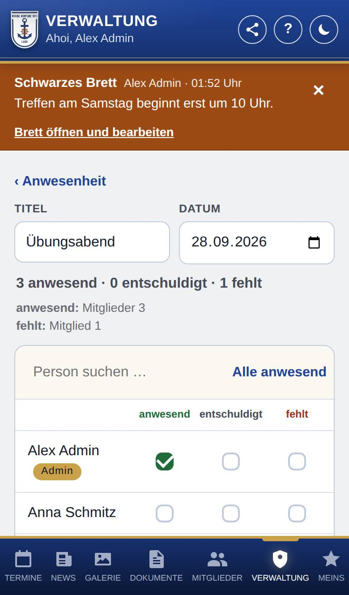
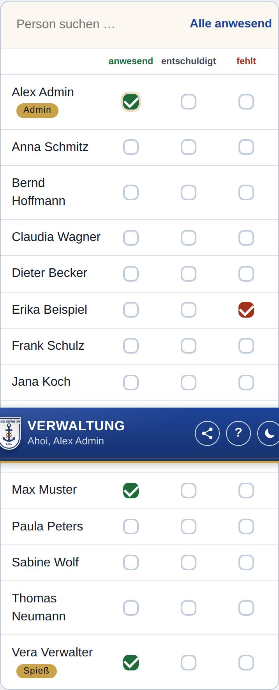
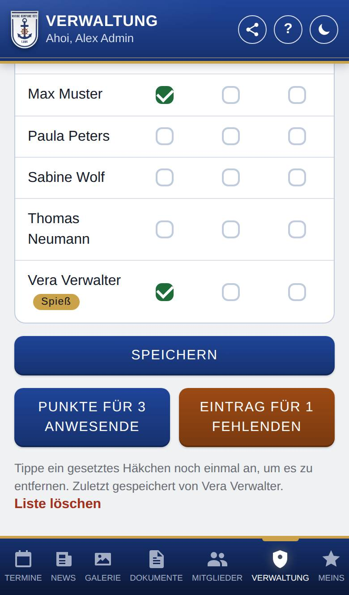

Anwesenheitsliste „…“
Nur, wenn Anwesenheit eingeschaltet ist.
In einer Anwesenheitsliste trägst du für einen Termin ein, wer anwesend war, wer entschuldigt war und wer fehlt. Darfst du auch Punkte oder Strafen vergeben, buchst du sie von hier aus für alle Anwesenden bzw. Fehlenden.

So öffnest du die Seite
Tippe unten auf Verwaltung, dann auf Anwesenheit. Tippe dort auf einen Termin oder unter Letzte Listen auf eine Liste.
Was du hier siehst
- ‹ Anwesenheit: führt zurück zur Übersicht.
- Titel und Datum: Bei einem Termin aus dem Kalender stehen sie fest. Bei einem freien Termin stehen sie in Feldern, die du ändern kannst.
- Zähler: z. B. „3 anwesend · 0 entschuldigt · 1 fehlt“. Ist alles gespeichert, steht darunter die Aufteilung nach Gruppen, z. B. „anwesend: Mitglieder 3“.
- Person suchen …: zeigt nur Personen, deren Name passt.
- Alle anwesend: setzt alle gezeigten Personen auf anwesend (bei einer Suche nur die gefundenen).
- Die Liste: alle Personen mit einer Rolle, außer Gast. Je Person gibt es ein Kästchen für anwesend, entschuldigt und fehlt. Neben dem Namen steht die Rolle, wenn sie nicht Mitglied ist. Punkte gebucht heißt: Diese Person hat für diese Liste schon Punkte bekommen.
- Speichern: speichert deine Änderungen. Ist alles gespeichert, steht dort Gespeichert.
- Punkte für … Anwesende und Eintrag für … Fehlende: nur, wenn du Punkte bzw. Strafen vergeben darfst.
- Liste löschen: ganz unten.
So gehst du vor
Eintragen
- Tippe bei jeder Person auf das passende Kästchen. Tippst du ein gesetztes Häkchen noch einmal an, ist es wieder weg.
- Waren fast alle da, tippe zuerst auf Alle anwesend und ändere dann nur die Ausnahmen.
- Tippe auf Speichern.

Punkte für die Anwesenden buchen
- Tippe auf Punkte für … Anwesende. Ungespeicherte Änderungen speichert die App vorher.
- Das Formular für Punkte öffnet sich. Ausgewählt sind alle anwesenden Mitglied, die für diese Liste noch keine Punkte haben. Grund und Datum kommen aus der Liste.
- Prüfe die Auswahl, wähle die Punkte und buche sie wie sonst unter Verwaltung → Punkte +. Mit ‹ und dem Titel der Liste oben kommst du zurück.

Einen Eintrag für die Fehlenden anlegen
- Tippe auf Eintrag für … Fehlende. Ungespeicherte Änderungen speichert die App vorher.
- Das Formular für Strafen öffnet sich mit allen Mitglied, die gefehlt haben. Als Grund steht „Gefehlt:“ und der Titel der Liste.
- Prüfe die Auswahl und trage den Eintrag ein wie sonst unter Verwaltung → Strafen +.
Eine Liste löschen
- Tippe ganz unten auf Liste löschen.
- Bestätige die Frage.
Gut zu wissen
- In der Liste stehen auch Personen, deren Rolle keinen Mitgliederbereich hat (z. B. Anwärter). Punkte und Strafen bekommen aber nur Personen mit Mitgliederbereich.
- Wer für diese Liste schon Punkte hat, bekommt sie kein zweites Mal. Haben alle Anwesenden schon welche, steht dort „Punkte für alle Anwesenden bereits gebucht.“
- Bei Strafen merkt sich die Liste nicht, wer schon einen Eintrag hat. Lege ihn also nicht zweimal an.
- Löschst du eine Liste, bleiben die schon gebuchten Punkte erhalten.
- Unten steht, wer die Liste zuletzt gespeichert hat.
- Was im Zähler als eigene Gruppe erscheint, legt ein Admin unter Einstellungen → Rollen im Abschnitt Anwesenheit: Gruppen im Zähler fest. Ohne Einstellung zählen alle Rollen mit Mitgliederbereich als Mitglied, die übrigen (z. B. Anwärter) je für sich.
- Jede Person sieht ihre eigenen Einträge unter Meins → Anwesenheit.